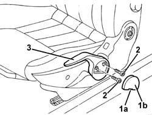
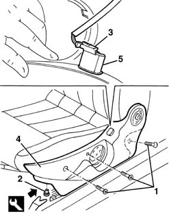

7045A43 SEAT EXTERIOR GUARD - R R
- Path
- Procedures > 70 FITTINGS > 7045 FRONT SEATS > 7045A FRONT SEAT ASSEMBLY > 7045A43 SEAT EXTERIOR GUARD - R R
- Kind
- repair procedure (removal / refitting; the operation number is the code)
- Applies to
- all engines; all production periods
- Interactive page
- https://sloeber94.github.io/elrnDB-aGt/en/#/125001907
Applies to: all engines; all production periods
 Removing
Removing
 Refitting
RefittingUsing the adjustment lever, lift the seat to the end of its travel.
1. Adjust splines (1a) and prise up panel (1b).
2. Undo the bolts.
3. Remove the seat height adjustment lever.

Applies to: all engines; all production periods
1. Undo the bolts securing the shield.
2. Undo the retaining buttons using the special tool
 | Name | Country |
|---|---|---|
2 | Scraper blade | 1.823.015.000 |
3. Move the guard slightly and disconnect the seat heating switch electrical connection, if fitted.
4. Recover the guard.
5. If necessary, remove the switch from the guard using the inner retaining tabs.

Applies to: all engines; all production periods
Refitting
RemovingCheck that the guard is undamaged.
If removed, refit the switch.
Connect the electrical connection.
Fit the guard and do up the retaining stud.
Tighten the bolts.
Fit the seat height adjustment lever and secure with bolts.
Fit the trim.
Check the operation of the seat controls.
Topics linked from this page (1)
Topics that link to this page (15)
- O05 FRONT SEAT HEIGHT ADJUSTMENT NOT WORKING
- S65 SEATS CREAKING
- 7045A36 DRIVERS SEAT MANUAL HEIGHT ADJUSTMENT DEVICE - R R
- 7045A62 JOINTS OF DRIVER`S SIDE FRONT SEAT LIFT DEVICE - R R WITH SEAT DISCONNECTED
- 7045A72 FRONT SEAT MOUNT/GUIDE - PASSENGER`S SIDE R R WITH SEAT REMOVED
- 7045A73 FRONT SEAT MOUNT/GUIDE - PASSENGER`S SIDE R R
- 7045A85 R R HANDLE FOR FRONT SEAT FORE AND AFT ADJUSTMENT
- 7045A86 R R HANDLE FOR FRONT SEAT FORE AND AFT ADJUSTMENT
- 7045A87 R R HANDLE FOR FRONT SEAT FORE AND AFT ADJUSTMENT
- 7045A90 R R HANDLE FOR FRONT SEAT FORE AND AFT ADJUSTMENT
- 7045A91 R R HANDLE FOR FRONT SEAT FORE AND AFT ADJUSTMENT
- 7045A92 R R HANDLE FOR FRONT SEAT FORE AND AFT ADJUSTMENT
- 7045A93 R R HANDLE FOR FRONT SEAT FORE AND AFT ADJUSTMENT
- 7045L30 BACKREST FOLDING CONTROL CABLE/ROD - R.R.
- 7045M22 L/H OR R/H FRONT SEAT CUSHION HEAT PAD - R+R FOLLOWING ELECTRICAL WIRING CHECK